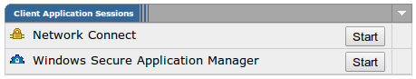
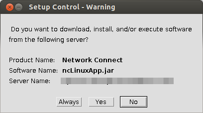
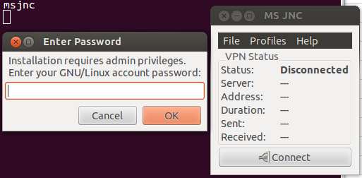
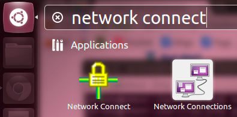
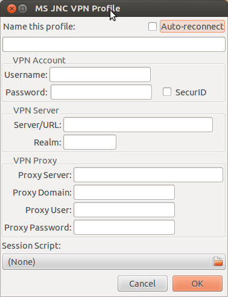

雖然官方提供有 Juniper Network Connect (JNC) 做為 Linux 下的 VPN client，但它只能順利裝在 Red Hat 上。
幸好有人提供了 MadScientist JNC Session Manager (MS JNC) 這支 JNC 的 "加強版"，可以在 Debian 上安裝失敗後，接手完成安裝的動作。
-
先將
msjnc準備好。wget -q -O /tmp/msjnc https://raw.github.com/madscientist/msjnc/master/msjnc chmod 755 /tmp/msjnc sudo cp /tmp/msjnc /usr/bin -
確認 browser 已經裝有 Java Plugin。
-
登入 VPN 入口網頁之後，按下 Network Connect 右邊的 Start 鈕，就會被提示要安裝 Network Connect。
 -
按下 Yes 後，開始執行
installNC.sh(~/.juniper_networks/network_connect)。一開始會被問到 root 的密碼，直接按 Enter 跳過即可，因為 Debian 下的 root 預設沒有密碼。 -
待
installNC.sh的視窗關閉之後，官方版本的 Network Connect 算是安裝失敗，不過 MSJNC 也就從這裡開始接手。 -
執行
msjnc，除了 MS JNC 的主畫面之外，也會被問到 sudoer 的密碼，成功之後選單就會出現 Network Connect。
要建立 VPN 連線之前，必須要建立一個 profile：

過程中，比較難懂的設定是 VPN Server 下的 Realm；這得從 VPN 入口網頁的原始碼取得，找到下面這一段：
<input type="hidden" name="realm" value="Your VPN Realm">那麼 Realm 就要填上 Your VPN Realm。